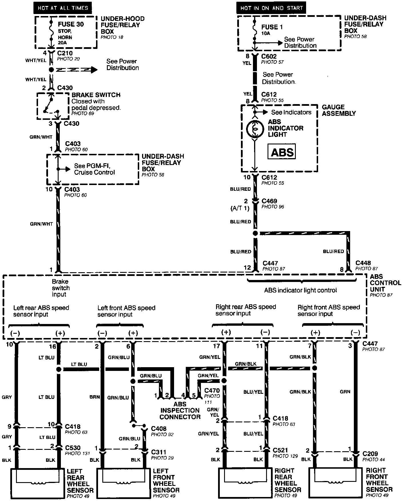
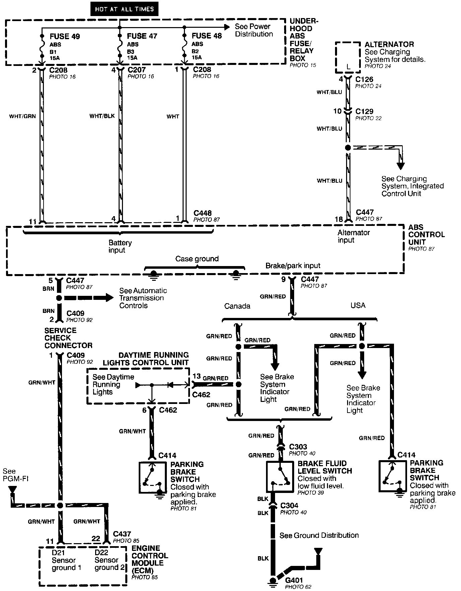
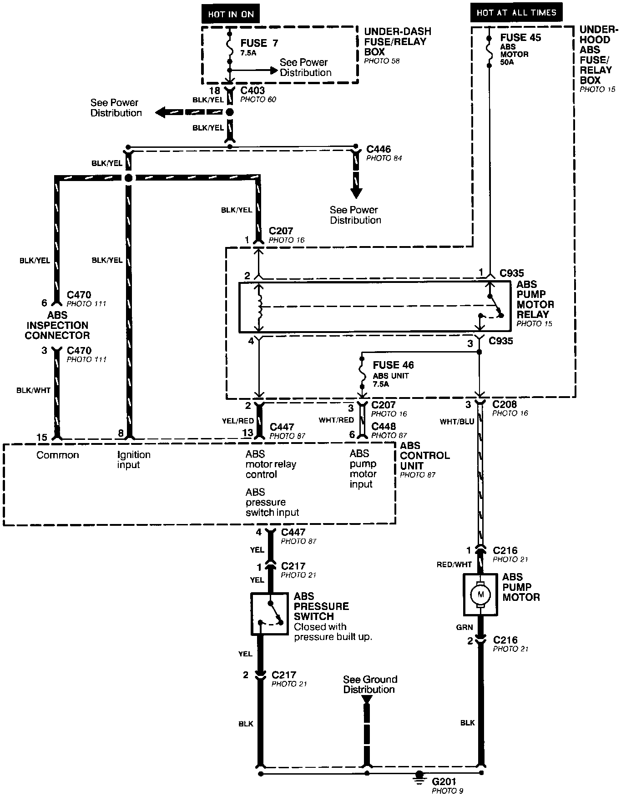
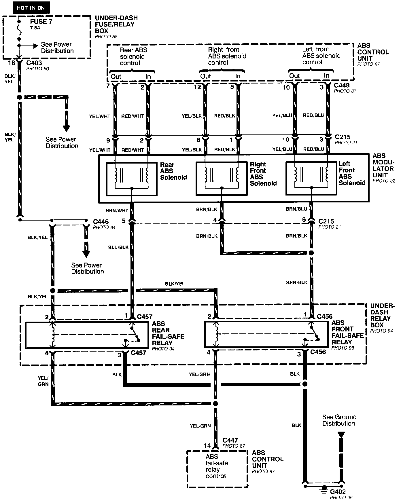

Electrical Diagrams
Anti-Lock Brake System (ABS)- Brake Switch, Indicator And Wheel Speed Sensor Inputs:

Anti-Lock Brake System (ABS)- Power, Brake Fluid Switch And Parking Brake Switch Inputs:

Anti-Lock Brake System (ABS)- Motor, Pressure Switch And Ignition Inputs:

Anti-Lock Brake System (ABS)- Fail-Safe Relays And Modulator Unit:
